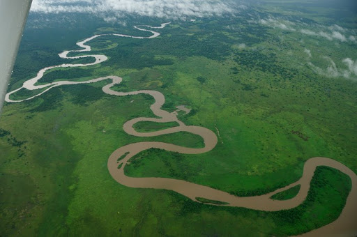
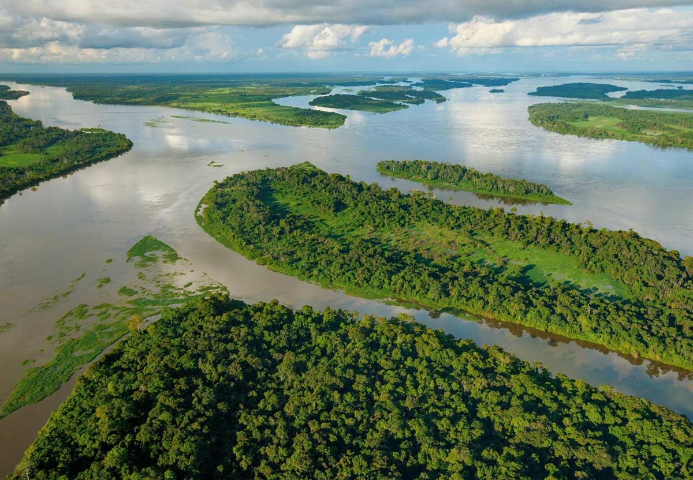
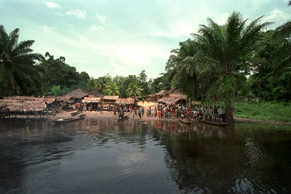
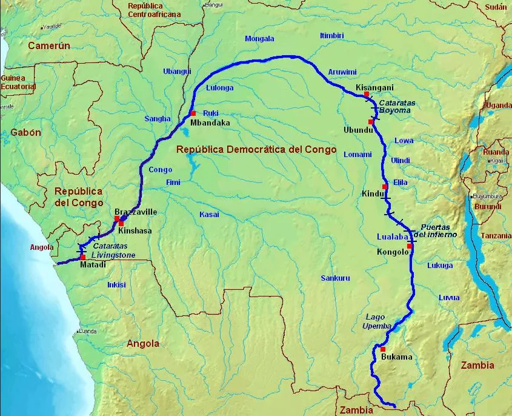

Конго
Главная страница


Конго — река в Центральной Африке, главным образом в Демократической Республике Конго (частично протекает по её границам с Республикой Конго и Анголой), самая полноводная и вторая по длине река Африки, вторая река по водности в мире после Амазонки (годовой сток равен 1318,2 км³ , хотя это в 5 раз меньше, чем у Амазонки) и самая глубокая река в мире. В верхнем течении (выше города Кисангани) называется Луалаба. Крупнейшая река, пересекающая экватор два раза.
Длина Конго от истока Луалабы — 4374 км (от истока Чамбеши — 4700 км). Площадь бассейна от 3457 до 3820 тыс. км². Исток Луалабы берёт начало на юго-востоке ДРК, на плато близ границы с Замбией. По другим данным, истоком Конго является река Чамбеши, образующаяся между озёрами Ньяса и Танганьика на высоте 1590 метров над уровнем моря. Она впадает в озеро Бангвеулу, вытекает из него под именем Луапула, впадает в озеро Мверу, вытекая из него как река Лувуа и соединяется с Луалабой.
В формировании стока рек бассейна Конго преобладающую роль играет обильное дождевое питание. Большинство притоков Конго характеризуется преобладанием осеннего стока: на притоках с водосборами в Северном полушарии максимальный подъём воды наблюдается в сентябре—ноябре, в Южном — в апреле—мае. Апрельско-майский максимум стока характерен и для верхнего Конго (Луалабы). В среднем и, особенно в нижнем течении Конго сезонные колебания стока в значительной мере сглажены ввиду разновременности поступления в реку полых вод её притоков; из всех великих рек земного шара Конго отличается наибольшей естественной зарегулированностью.
Длинна: 4374 км
Площадь: 4 014 тыс. км²
Расход воды: 41 800 м³/сек

РЕКА КОНГО НА КАРТЕ